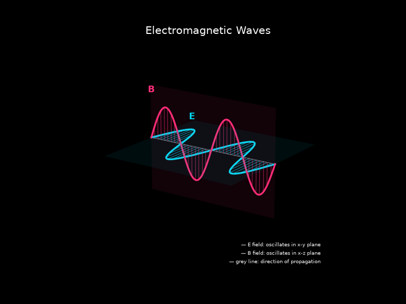

A scientific visualization created using Python to demonstrate the perpendicular oscillation of Electric and Magnetic fields.

The electric and magnetic fields oscillate perpendicular to one another and to the direction of propagation.
Developed using Python, NumPy and Matplotlib to transform mathematical equations into an animated visual simulation.